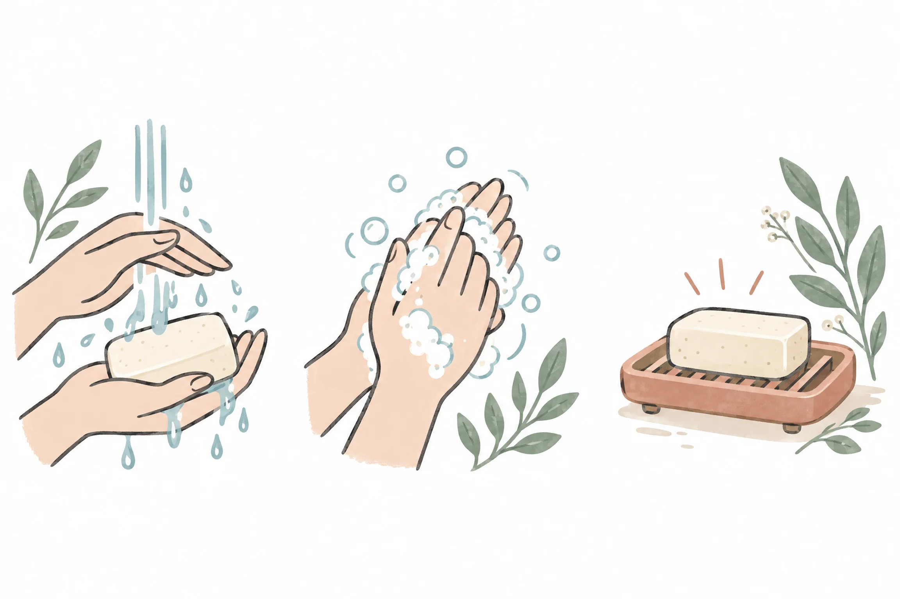

Una forma simple de usarlos

- Mojá la piel y la barra con agua tibia o fresca, según te resulte cómodo.
- Hacé espuma entre las manos o sobre una tela suave. Aplicala con movimientos tranquilos, sin frotar con fuerza.
- Enjuagá por completo y secá la piel con una toalla limpia, dando toques suaves.
¿Se puede usar en la cara?
Depende de cada fórmula. Usalo en el rostro solo si el producto lo indica; si está pensado para el cuerpo, mantené ese uso. Evitá el contacto con los ojos y las mucosas.
Cómo conservar la barra
Después de usarla, apoyala en una jabonera que drene el agua y dejala en un lugar ventilado. Si la guardás para viajar, esperá a que esté seca o usá un recipiente adecuado para barras húmedas.